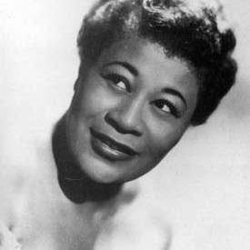
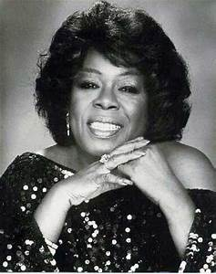
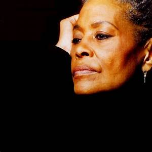
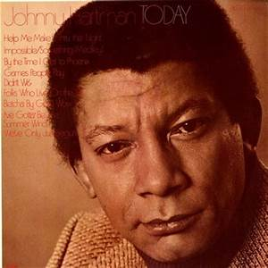
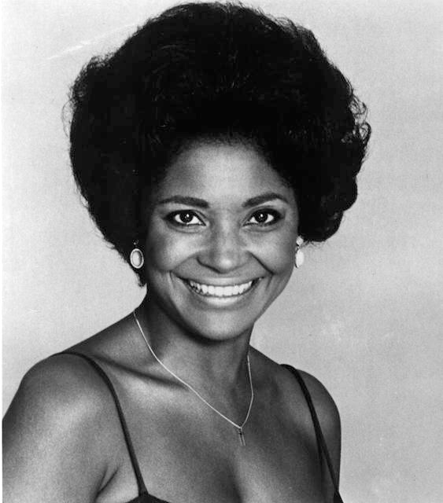
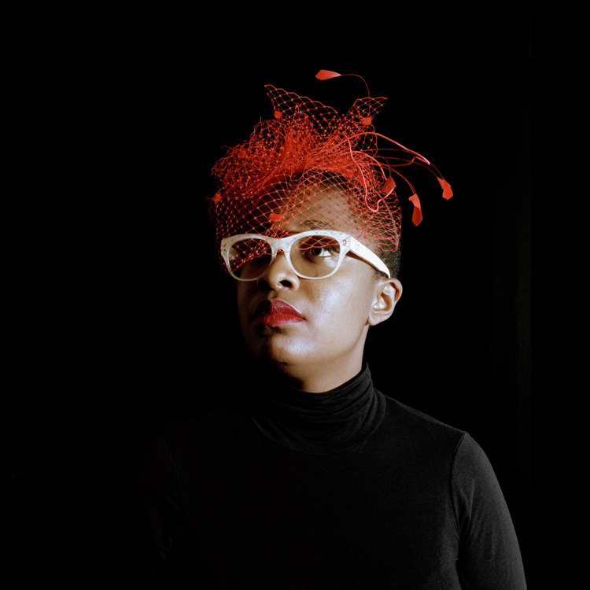
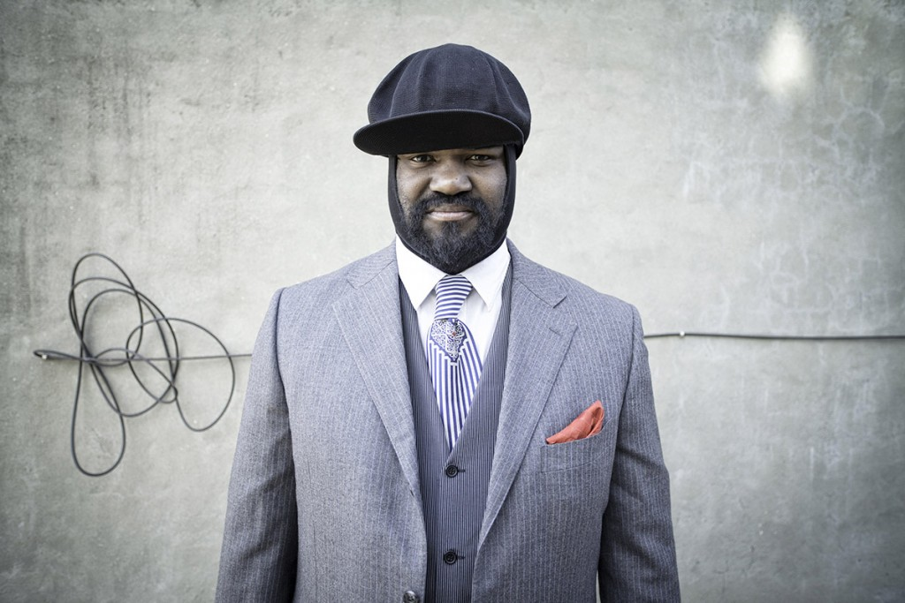

Favorite Jazz Sindger
- Ella Fitzgerald
- Sarah Vaughan
- Abbey Lincoln
- Johnny Hartmann
- Al Jarreau
- Nancy Wilson
- Cecile McLorin Salvant
- Gregory Porter
Ella Fitzgerald
Ella Jane Fitzgerald (April 25, 1917 June 15, 1996) was an American jazz singer often referred to as the First Lady of Song, Queen of Jazz, and Lady Ella. She was noted for her purity of tone, impeccable diction, phrasing and intonation, and a "horn-like" improvisational ability, particularly in her scat singing.
Sarah Vaughan
Sarah Lois Vaughan (March 27, 1924 April 3, 1990) was an American jazz singer. She has been described by music critic Scott Yanow as having "one of the most wondrous voices of the 20th century." Nicknamed "Sassy" and "The Divine One", Vaughan was a four-time Grammy Award winner, including a "Lifetime Achievement Award". The National Endowment for the Arts bestowed upon her its "highest honor in jazz", the NEA Jazz Masters Award, in 1989.
Abbey Lincoln
Anna Marie Wooldridge (August 6, 1930 August 14, 2010), known by her stage name Abbey Lincoln, was an African-American jazz vocalist, songwriter, and actress, who wrote and performed her own compositions. She was a civil rights advocate and activist from the 1960s on. Lincoln made a career not only out of delivering deeply felt presentations of standards but writing and singing her own material as well.
Johnny Hartmann
John Maurice Hartman (July 3, 1923 September 15, 1983) was an American jazz singer who specialized in ballads and earned critical acclaim, though he was never widely known. He recorded a well-known collaboration with the saxophonist John Coltrane in 1963 called John Coltrane and Johnny Hartman, was briefly a member of Dizzy Gillespie's group and recorded with Erroll Garner. Most of Hartman's career was spent recording solo albums.
Al Jarreau
Alwin Lopez "Al" Jarreau (March 12, 1940 February 12, 2017) was an American singer and musician. He received a total of seven Grammy Awards and was nominated for over a dozen more. Jarreau is perhaps best known for his 1981 album Breakin' Away. He also sang the theme song of the late-1980s television series Moonlighting, and was among the performers on the 1985 charity song "We Are the World."
Nancy Wilson
Nancy Wilson (born February 20, 1937) is an American singer with more than seventy albums, and three Grammy Awards. She has been labeled a singer of blues, jazz, R&B, pop and soul, a "consummate actress", and "the complete entertainer". The title she prefers, however, is "song stylist". She has received many nicknames including "Sweet Nancy", "The Baby", "Fancy Miss Nancy" and "The Girl With the Honey-Coated Voice".
Cecile McLorin Salvant
Cecile McLorin Salvant (born August 28, 1989) is an American jazz vocalist. She was the winner of the first prize in the Thelonious Monk International Jazz Competition in 2010, releasing her first album, Cecile, shortly thereafter. Her second album, WomanChild, was released in 2013 on Mack Avenue Records, receiving a 2014 Grammy Award nomination for Best Jazz Vocal Album. Salvant won four categories in the 2014 Down Beat Critics Poll: Jazz Album of the Year, Female Vocalist, Rising Star Jazz Artist, and Rising Star Female Vocalist. Her third album, For One to Love, was released on September 5, 2015, to critical acclaim from the New York Times, The Guardian, and Los Angeles Times. It won her the Grammy Award for Best Jazz Vocal Album in 2016.
Gregory Porter
Gregory Porter (born November 4, 1971) is an American singer, songwriter, and actor. He won the Grammy Award for Best Jazz Vocal Album in 2014 for Liquid Spirit and in 2017 for Take Me to the Alley.